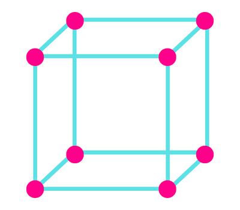

एकक कोष्ठिका या इकाई सेल किसे कहते है ? - इसका चित्र तथा प्रकार |
कोई क्रिस्टल जालक जिस लघुत्तम त्रिविमीय संरचना की पुनरावृति से निर्मित होता है उसी लघुत्तम त्रिविमीय संरचना को एकक कोष्ठिका या इकाई सेल कहते है |
एकक कोष्ठिका के कितने प्रकार होते है ?
एकक कोष्ठिका के मुख्य रूप से दो प्रकार होते है -
- आध एकक कोष्ठिका
- केंद्रित एकक कोष्ठिका
आध एकक कोष्ठिका किसे कहते है ?
वह एकक कोष्ठिका जिसके सभी कोनों पर एक - एक अवयवी कण उपस्थित हो उसे ही आध एकक कोष्ठिका कहते है | इस एकक कोष्ठिका के केवल कोनों पर ही अवयवी कण उपस्थित होते है |
केंद्रित एकक कोष्ठिका किसे कहते है ?
वह एकक कोष्ठिका जिसके कोनों पर तो अवयवी कण उपस्थित हो साथ ही कोनों के अतिरिक्त अन्य स्थानों पर भी अवयवी कण उपस्थित हो उसे ही केंद्रित एकक कोष्ठिका कहते है |
केंद्रित एकक कोष्ठिका के कितने प्रकार होते है ?
केंद्रित एकक कोष्ठिका के तीन प्रकार होते है |
- अंतःकेंद्रित एकक कोष्ठिका
- फलक-केंद्रित एकक कोष्ठिका
- अंत्य-केंद्रित एकक कोष्ठिका
अंतःकेंद्रित एकक कोष्ठिका किसे कहते है ?
ऐसी एकक कोष्ठिका जिसके किनारों के अतिरिक्त उसके केंद्र पर भी एक अवयवी कण उपस्थित हो तो उसे अंतःकेंद्रित एकक कोष्ठिका कहेंगे |
फलक-केंद्रित एकक कोष्ठिका किसे कहते है ?
ऐसी एकक कोष्ठिका जिसके कोनो पर उपस्थित अवयवी कणों के अतिरिक्त उसके प्रत्येक फलक के केंद्र पर भी एक - एक अवयवी कण उपस्थित हो तो उसे फलक-केंद्रित एकक कोष्ठिका कहते है |
अंत्य-केंद्रित एकक कोष्ठिका किसे कहते है ?
ऐसी एकक कोष्ठिका जिसके कोनो पर उपस्थित अवयवी कणों के अतिरिक्त उसके किन्ही दो विपरीत फलको के जोड़ो पर भी अवयवी कण उपस्थित हो तो उसे अंत्य-केंद्रित एकक कोष्ठिका कहते है |
एकक कोष्ठिका के पैरामीटर क्या होते है ?
किसी एकक कोष्ठिका के ज्यामितीय मापन को ही उस एकक कोष्ठिका के पैरामीटर कहते है |
ये पैरामीटर अक्षीय दुरी तथा अक्षीय कोण कहलाते है |
अक्षीय दुरी -
एकक कोष्ठिका के एक किनारे से दुसरे किनारे के बिच की दुरी को ही अक्षीय दुरी कहते है |
एकक कोष्ठिका के तीन किनारे होते है जिन्हें a, b तथा c द्वारा व्यक्त किया जाता है, जो एक - दुसरे के परस्पर लम्बवत हो भी सकते है या नहीं भी |
अक्षीय कोण -
एकक कोष्ठिका के किनारों के मध्य के कोनो को अक्षीय कोण कहते है |
एकक कोष्ठिका मे तीन अक्षीय कोण होते है जिन्हें α, β तथा γ द्वारा व्यक्त किया जाता है |